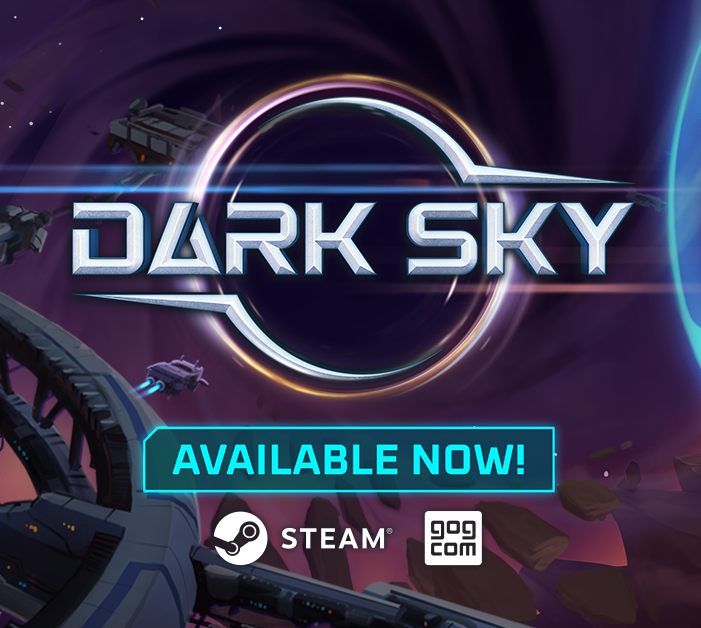
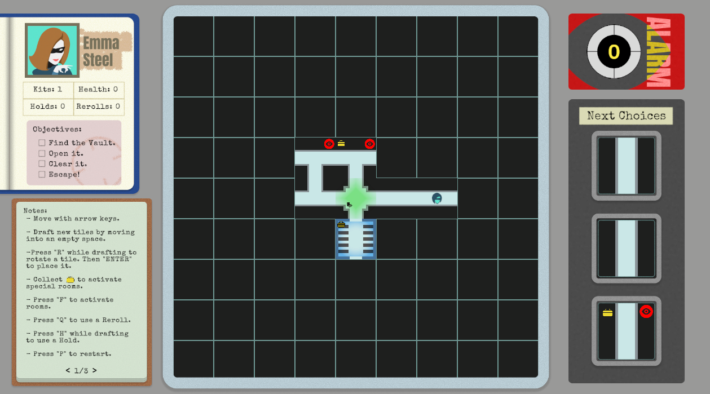
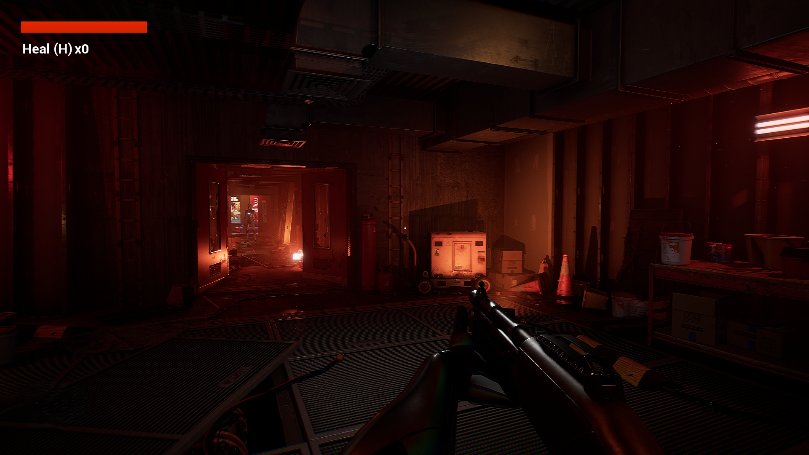
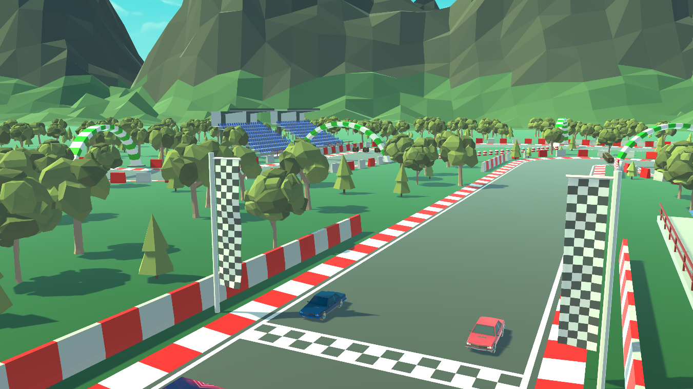
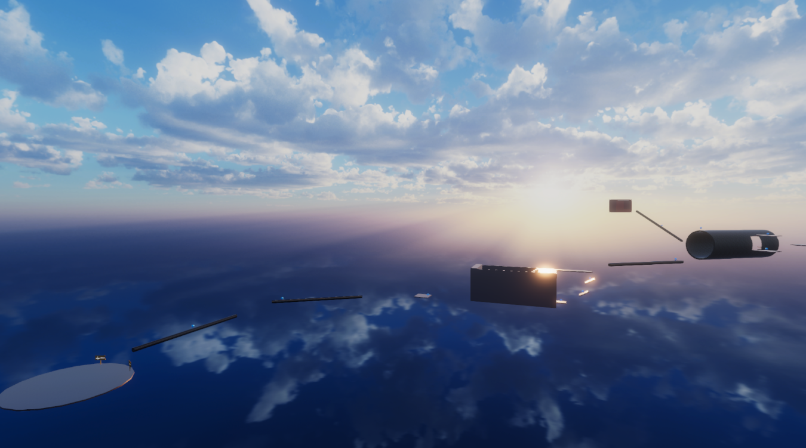
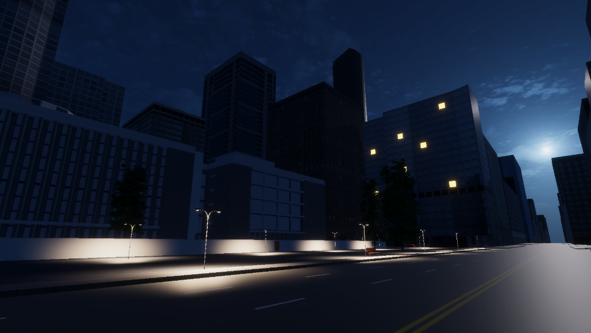
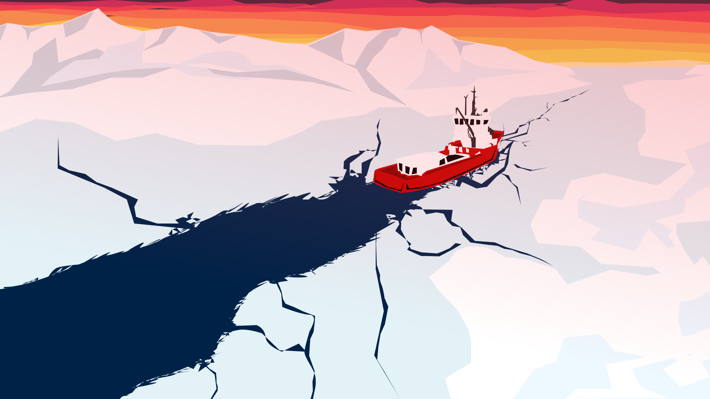
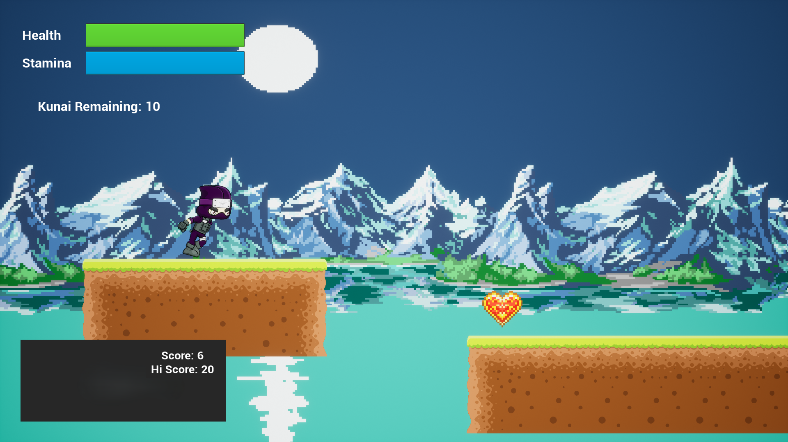

{kind=link}

Dark Sky
A narrative RPG deckbuilder that features tactical combat and a branching card upgrade system.
Worked on it as a QA Analyst. Available on Steam and GOG.

A narrative RPG deckbuilder that features tactical combat and a branching card upgrade system.
Worked on it as a QA Analyst. Available on Steam and GOG.

A short stealth puzzle game inspired by Blue Prince.
Available on Itch.io

A short and simple FPS made with Unreal 5. Reach the end and defeat the boss to win.
Available on Itch.io

Online multiplayer arcade-style high octane racing game.
Play with your friends though the Internet or practice alone in singleplayer mode.

A short fast paced 3D platformer that rewards the player when completing levels faster than a set time.

My End of Degree work at Universitat Jaume I. A short stealth videogame designed and developed all on my own that utilises a 3D model of the campus' library as the main environment.

A short demo of a videogame made for Project Debug of Universitat Jaume I, which intended to raise awareness about climate change through videogames.

Endless runner made in Unreal Engine 4.
Try to go as far as you can without dying.
{kind=link}
{kind=link}
{kind=link}
{kind=link}
{kind=link}
{kind=link}
{kind=link}